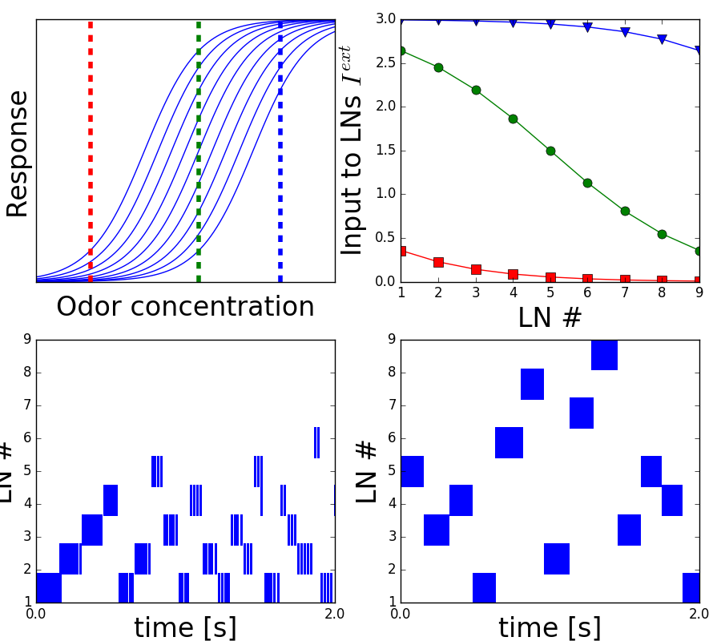

This is the readme for the models associated with the paper:
Komarov M, Bazhenov M (2016)
Linking dynamics of the inhibitory network to the input structure.
J Comput Neurosci
doi: 10.1007/s10827-016-0622-8
This C++ code was contributed by M Komarov.
Usage:
This code (for figure 9 in the paper) can be compiled with commands like:
g++ main1.cpp -o main1
g++ main2.cpp -o main2
g++ main3.cpp -o main3
and then run with commands like:
./main1
./main2
./main3
Each program takes about a minute to run (on a 2012 MacBook Pro laptop).
You can plot the results with the included python file:
python pl_ts.py
which generates graphs similar to figure 9 in the paper:
